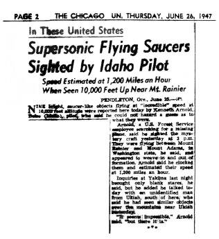

Kenneth Arnold sighting
Mount Rainier, 1947

A pilot reported nine fast objects moving like saucers skipping on water. The press coined the term flying saucer. 1
Open in the interactive Watcher
Related
- Ray Palmer Person
- Kenneth Arnold Person
Sources
- Kenneth Arnold UFO sighting Wikipedia